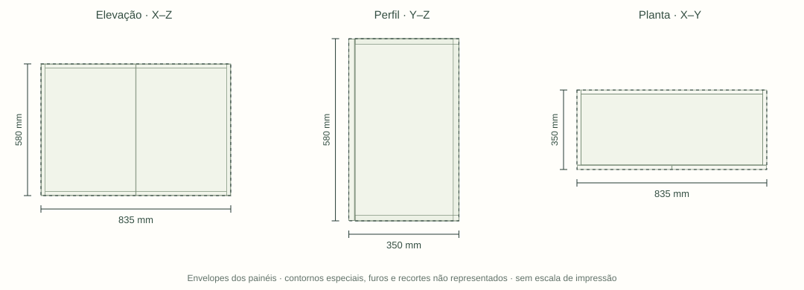

P15 · Lavanderia · FICHA R13 / MODELO R45 · mm
Aéreo da lavanderia
Envelope nominal do conjunto, incluindo componentes e reservas. Peças abaixo têm medidas próprias.

Medidas internas e encontros
799×312×544 entre faces. Base e topo 18, nenhum divisor intermediário físico direto.
Acabamentos
Interiores Branco TX. Faces aparentes: Greenplac Arenza. Faces registradas separadamente; não implica chapa dupla pronta.
| Aplicação | Material / acabamento | Situação |
|---|---|---|
| Interiores identificados | Branco TX | Escolhido pelo usuário em 23/10/2026; fabricante/código e substrato ainda técnicos |
| Faces aparentes | Greenplac Arenza | Escolha documental preservada; distinguir cada face da mesma peça |
A especificação documental vigente prevalece sobre cores antigas do modelo. Código comercial não informado permanece a definir.
Peças e espessuras
| ID / peça | Qtd. | C × L · mm | Esp. · mm | Material | Forma |
|---|---|---|---|---|---|
| Peca359Lateral direita | 1 | 580 × 330 | 18 | face interna Branco TX; face aparente Greenplac ArenzaDocumento vigente | Retangular |
| Peca360Lateral esquerda | 1 | 580 × 330 | 18 | face interna Branco TX; face aparente Greenplac ArenzaDocumento vigente | Retangular |
| Peca361Fundo | 1 | 799 × 544 | 18 | Branco TX · faces internasDocumento vigente | Retangular |
| Peca362Base | 1 | 799 × 312 | 18 | face interna Branco TX; face aparente Greenplac ArenzaDocumento vigente | Retangular |
| Peca363Tampo | 1 | 799 × 312 | 18 | Branco TX · faces internasDocumento vigente | Retangular |
| FrenteComumR010Aéreo da lavanderia - porta direita — frente com canecos | 1 | 578 × 414,5 | 18 | face interna Branco TX; face aparente Greenplac ArenzaDocumento vigente | Recortado/especial |
| FrenteComumR011Aéreo da lavanderia - porta esquerda — frente com canecos | 1 | 578 × 414,5 | 18 | face interna Branco TX; face aparente Greenplac ArenzaDocumento vigente | Recortado/especial |
C e L são as duas maiores dimensões do envelope local, sem indicar sentido do veio. Espessura é a menor dimensão geométrica. Recortes e furação não podem ser recuperados destas três medidas. Fita de borda e folgas não foram descontadas; lista nominal, não plano de corte.
Ferragens e ligações
| Qtd. | Ferragem / referência | Situação | Montagem / conferência |
|---|---|---|---|
| 4 unidade | Dobradiças de caneco das portas de abrirBlum 71B3550 (base CAD); alternativa FGVTN TN MS Slow H0 51MS15XTN2200BF, não cumulativa | candidato | 2 folhas × 2 dobradiças = 4 no estudo vigente. Quantidade identificada; resistência e produto final não aprovados. |
| 4 unidade | Calços correspondentes às dobradiçasBlum 173H7100; H0 próprio do conjunto FGVTN somente se essa alternativa for escolhida | candidato | Um calço por dobradiça; não misturar fabricante/furação e não duplicar se já incluído. A quantidade histórica56 da fonteR38 é superada pela contagemR45. |
| A definir unidade | Limitadores de abertura, somente nas folhas que necessitaremBlum 70T3553 somente com a dobradiça Blum compatível | pendente | Nas folhas efetivamente limitadas, equipar todas as dobradiças daquela folha; não multiplicar automaticamente por 52. |
| A definir conector / fixador | Ligações dos painéis da carcaçaA definir | pendente | 6contatos diretos retangulares identificados nesta amostra. Escolher ligação por interface/carga/acesso; zero na amostra não significa ausência de uniões. |
| A definir conjunto | Suspensão do móvel e interface com a paredeA definir | pendente | SAH215/9189903pesquisado exige rebaixo16mm ausente nas caixas atuais; não lançar como compatível. Conector–móvel, trilho e ancoragem são interfaces distintas. |
Quantidade de referência não equivale a compra liberada. Itens candidatos conservam seu status até fechar compatibilidade.
Roteiro de montagem e compatibilização
- Não presumir divisor intermediário inexistente no CAD.
- Vão de 799 mm exige ligação com fundo/reforço e suspensão dimensionadas.
- Alternativa FGVTN H0: caneco Ø35 × 11,3 mm, chapa 18 nominal; a furação Blum de 13 mm não é autorização para reutilização. K5/recobrimento16, exceto duas dobradiças da folha vizinha da cabeceira com K6/17.
Fechamentos técnicos deste móvel
Tratáveis com projeto, marcenaria ou fabricante; não dependem de medir o apartamento.
- Obter massa da folha acabada (chapa, fita, adesivo, puxador e vidro se houver) e validar quantidade/fixação pela tabela do fabricante da ferragem escolhida.
- Fechar padrão de parafusos, piloto, profundidade de caneco e trajetória da ferragem real; a cinemática Blum não valida automaticamente FGVTN.
- Base799 ×312 ×18:4,78mm sob20kg é cenário, não carga. Dimensionar reforço ou ligação estrutural com fundo/suspensão preservando o vão.
- Fechar mapa de uniões por interface: material real, conector, quantidade por encontro, distâncias de borda, piloto/profundidade e acesso da ferramenta; contato de borda não é ligação dimensionada.
- Definir sistema de suspensão e ligação à caixa antes de quantificar; a alternativaHettichSAH215exige16mmtraseiros e não cabe automaticamente no fundo alinhado atual.
- Cenário de base somente nas laterais dá 4,78 mm imediata para 20 kg. Reforço ou suspensão/ligação com fundo dimensionada, antes de limitar carga.
- Definir produto construtivo da chapa, classe/adequação ao uso e espessura de compra; menor dimensão do CAD não é automaticamente espessura executiva.
- Definir união, sequência, folgas e mapa de usinagem com a ferragem selecionada; não substituir essa decisão por medição de campo.
- Cor interna resolvida: Branco TX. Especificar fabricante/código, substrato, classe e processo de composição; são decisões técnicas, não medições de campo.
- Definir mapa de faces e solução construtiva para Branco TX interno + padrão aparente; não presumir chapa dual comercial pronta.
- Fechar fita/selagem por aresta, sentido do veio nas faces decorativas e usinagens com os produtos definidos.
2 conferências para este móvel. Abrir levantamento de campo →
Rastreabilidade documental
- 01_Projeto/Consolidacao_R45_2026-10-23/Portas_e_articulacoes/Relatorio.html
- 01_Projeto/Modelo_FreeCAD/01_Atual/Ferragens_R38_2026-10-20/README.md
- 01_Projeto/Avanco_pendencias_2026-10-21/Ferragens/Dobradicas_46_compatibilidade.html
- 01_Projeto/Consolidacao_R45_2026-10-23/Inventario/Matriz_20_modulos.md
- 01_Projeto/Consolidacao_R45_2026-10-23/Inventario/Interfaces_retangulares.md
- 01_Projeto/Consolidacao_R45_2026-10-23/Inventario/Ferragens_fixas.md
- 01_Projeto/Registro_de_decisoes.md
- 01_Projeto/Estudo_interativo/src/cad-data.js
- 01_Projeto/Estudo_interativo/fabrication/Decisao_acabamentos_R13.md